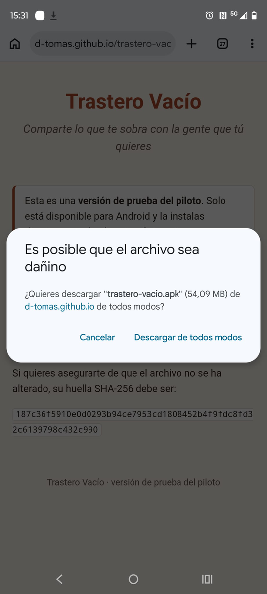
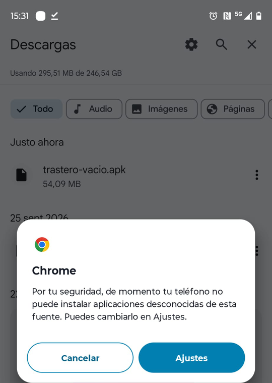
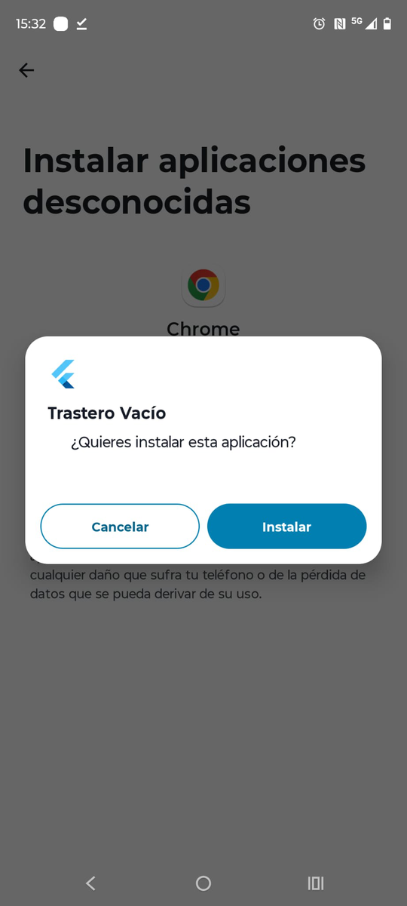
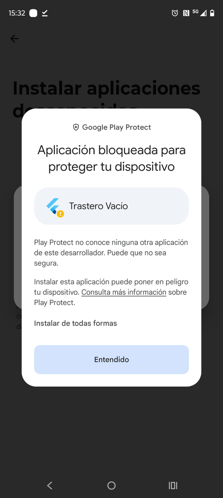
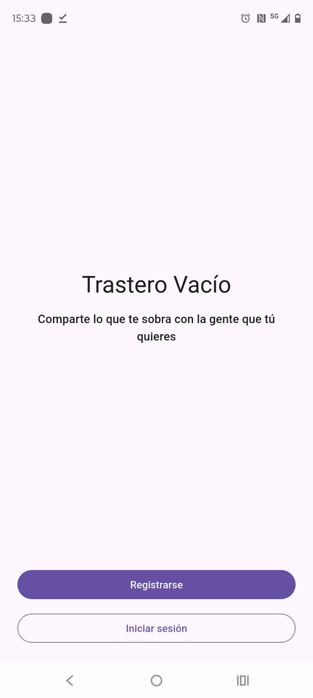
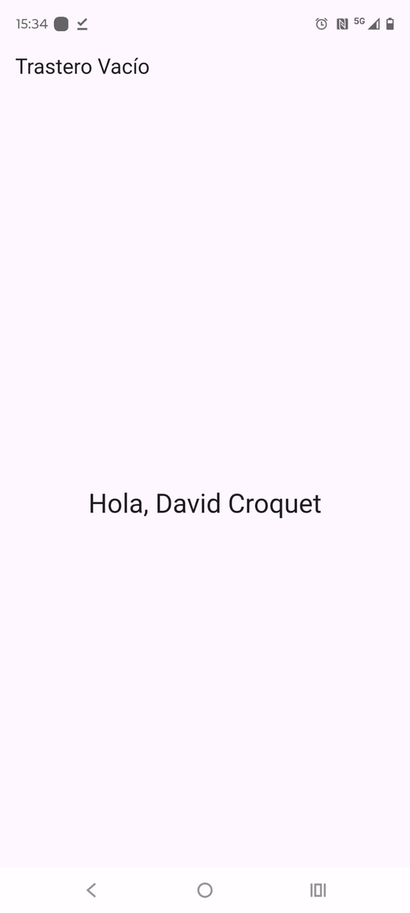

Esta es una versión de prueba del piloto. Solo está disponible para Android y la instalas directamente desde esta página, sin pasar por Google Play.
Descargar la app para AndroidComprobar la descarga
Si quieres asegurarte de que el archivo no se ha alterado, su huella SHA-256 debe ser:
187c36f5910e0d0293b94ce7953cd1808452b4f9fdc8fd32c6139798c432c990
Cómo instalar
Al instalar una app fuera de Google Play, Android te pedirá varias confirmaciones. Es normal: son avisos generales del sistema para cualquier app que no viene de la tienda. Las capturas son de un móvil con Android en español; en el tuyo los textos pueden variar un poco.
-
Descarga la app. Abre esta página en el navegador del móvil y pulsa
«Descargar la app para Android». Chrome te avisará de que el archivo «puede ser dañino»
(lo dice de cualquier archivo .apk). Pulsa «Descargar de todos modos».

-
Permite instalar apps desconocidas desde tu navegador. Cuando termine la descarga,
abre el archivo descargado (desde el aviso de Chrome o desde la lista de Descargas). La primera vez
Android te dirá que tu teléfono no puede instalar aplicaciones desconocidas de esa fuente.
Pulsa «Ajustes».

-
Activa «Permitir de esta fuente» y vuelve atrás. En la pantalla «Instalar aplicaciones
desconocidas», activa el interruptor «Permitir de esta fuente» y pulsa la flecha para volver.
Si abriste el archivo desde WhatsApp u otra app en lugar de Chrome, el permiso se da a esa otra app.
Al volver, Android pregunta «¿Quieres instalar esta aplicación?»: pulsa «Instalar».

-
Play Protect. Es posible que aparezca «Aplicación bloqueada para proteger tu
dispositivo»: Play Protect no conoce a este desarrollador porque la app aún no está en la tienda.
Pulsa «Instalar de todas formas» (en algunos móviles aparece tras «Más detalles»).
No pulses «Entendido»: eso cancela la instalación.

-
Abre la app. Cuando Android diga «App instalada», pulsa «Abrir». Verás la bienvenida
de Trastero Vacío, con los botones «Registrarse» e «Iniciar sesión».

-
Crea tu cuenta. Pulsa «Registrarse» y rellena tus datos. Al terminar entrarás
en la pantalla principal, que te saluda por tu nombre. La sesión se mantiene al cerrar y abrir la app.

Cómo comprobar la huella SHA-256 (opcional)
Después de descargar el archivo, puedes calcular su huella SHA-256 con una app de comprobación de
archivos o, en un ordenador, con el comando sha256sum trastero-vacio.apk
(Linux y macOS: shasum -a 256 trastero-vacio.apk). Debe coincidir con la que aparece arriba.
Cómo actualizar
Cuando haya una versión nueva, vuelve a esta página, descarga el archivo e instálalo encima de la app que ya tienes. Va firmado con la misma clave, así que se actualiza sin perder tus datos ni tu sesión.